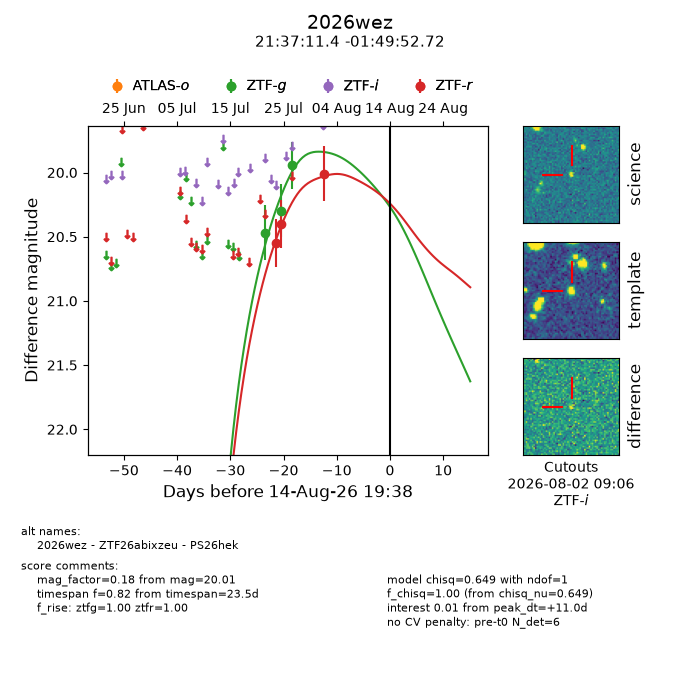
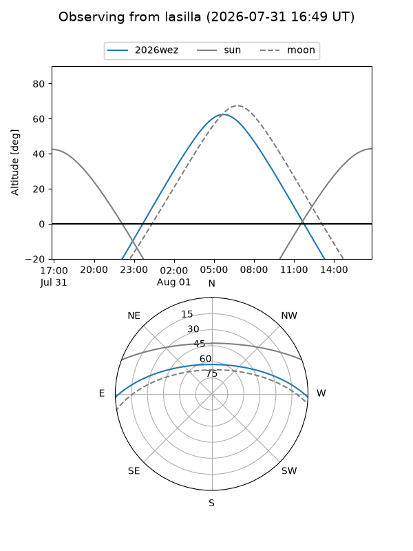
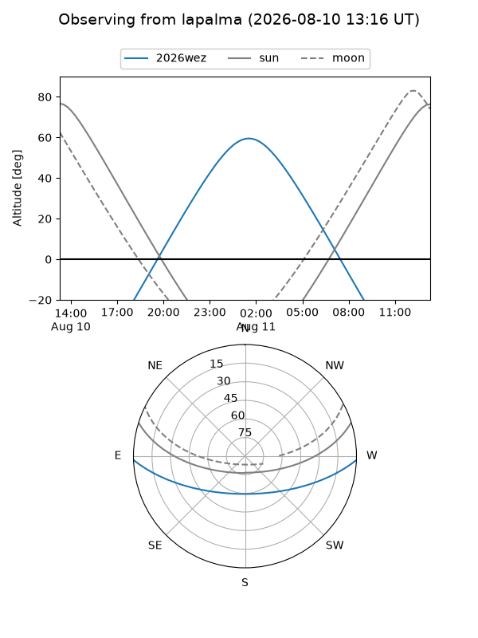
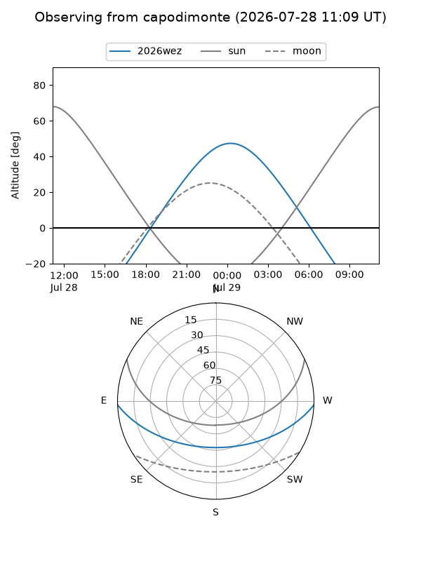
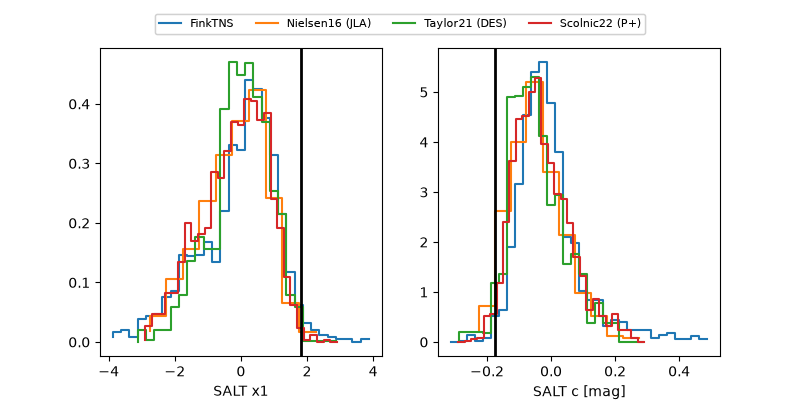

2026wez
Target 2026wez at 2026-08-14 19:41
Aliases and brokers:
FINK-ZTF: ztf.fink-portal.org/ZTF26abixzeu
Lasair-ZTF: lasair-ztf.lsst.ac.uk/objects/ZTF26abixzeu
ALeRCE-ZTF: alerce.online/object/ZTF26abixzeu
YSE-PZ: ziggy.ucolick.org/yse/transient_detail/2026wez
TNS name: wis-tns.org/object/2026wez
Direct TNS query: direct search
alt names
ZTF26abixzeu (ztf,fink_ztf)
2026wez (tns,yse)
PS26hek (panstarrs)
Coordinates:
equatorial (ra, dec) = 324.2976,-1.83131
equatorial (HMS+DMS) = 21:37:11.43,-01:49:52.72
galactic (l, b) = (52.9631,-37.10482)
Flags:
TNS type: nan
peak dt: +11.0
Photometry:
last ztfg=19.94, ztfr=20.01
3 ztfg, 3 ztfr detections
Lightcurve

Visibility



Additional plots
